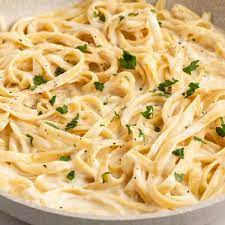

Pasta

Pasta Recipe
Quick and simple pasta recipe for a relaxed chill meal. Great with a class of wine.
Ingredients
- Any king of pasta
- Pasta sauce
- Salt
- Water
Steps
- Heat a pot of saltwater big enough to accommodate your cooked pasta plus an inch or two of pasta water (for a pound of pasta, you'll want four quarts).
- When it's boiling (you'll see big bubbles in the water and steam rising from the pot), add your pasta
- After it comes to a boil again, set a timer to the minutes specified on the pasta box, adjusting the flame downward if it begins boiling over, which sometimes happens.
- When the timer goes off, drain and rinse the pasta in cool water to stop the cooking process.
- All that's left is adding the sauce.